- 00 开篇词 想成为技术牛人？先搞定网络协议！.md.html
- 01 为什么要学习网络协议？.md.html
- 02 网络分层的真实含义是什么？.md.html
- 03 ifconfig：最熟悉又陌生的命令行.md.html
- 04 DHCP与PXE：IP是怎么来的，又是怎么没的？.md.html
- 05 从物理层到MAC层：如何在宿舍里自己组网玩联机游戏？.md.html
- 06 交换机与VLAN：办公室太复杂，我要回学校.md.html
- 07 ICMP与ping：投石问路的侦察兵.md.html
- 08 世界这么大，我想出网关：欧洲十国游与玄奘西行.md.html
- 09 路由协议：西出网关无故人，敢问路在何方.md.html
- 10 UDP协议：因性善而简单，难免碰到“城会玩”.md.html
- 11 TCP协议（上）：因性恶而复杂，先恶后善反轻松.md.html
- 12 TCP协议（下）：西行必定多妖孽，恒心智慧消磨难.md.html
- 13 套接字Socket：Talk is cheap, show me the code.md.html
- 14 HTTP协议：看个新闻原来这么麻烦.md.html
- 15 HTTPS协议：点外卖的过程原来这么复杂.md.html
- 16 流媒体协议：如何在直播里看到美女帅哥？.md.html
- 17 P2P协议：我下小电影，99%急死你.md.html
- 18 DNS协议：网络世界的地址簿.md.html
- 19 HttpDNS：网络世界的地址簿也会指错路.md.html
- 20 CDN：你去小卖部取过快递么？.md.html
- 21 数据中心：我是开发商，自己拿地盖别墅.md.html
- 22 VPN：朝中有人好做官.md.html
- 23 移动网络：去巴塞罗那，手机也上不了脸书.md.html
- 24 云中网络：自己拿地成本高，购买公寓更灵活.md.html
- 25 软件定义网络：共享基础设施的小区物业管理办法.md.html
- 26 云中的网络安全：虽然不是土豪，也需要基本安全和保障.md.html
- 27 云中的网络QoS：邻居疯狂下电影，我该怎么办？.md.html
- 28 云中网络的隔离GRE、VXLAN：虽然住一个小区，也要保护隐私.md.html
- 29 容器网络：来去自由的日子，不买公寓去合租.md.html
- 30 容器网络之Flannel：每人一亩三分地.md.html
- 31 容器网络之Calico：为高效说出善意的谎言.md.html
- 32 RPC协议综述：远在天边，近在眼前.md.html
- 33 基于XML的SOAP协议：不要说NBA，请说美国职业篮球联赛.md.html
- 34 基于JSON的RESTful接口协议：我不关心过程，请给我结果.md.html
- 35 二进制类RPC协议：还是叫NBA吧，总说全称多费劲.md.html
- 36 跨语言类RPC协议：交流之前，双方先来个专业术语表.md.html
- 37 知识串：用双十一的故事串起碎片的网络协议（上）.md.html
- 38 知识串：用双十一的故事串起碎片的网络协议（中）.md.html
- 39 知识串：用双十一的故事串起碎片的网络协议（下）.md.html
- 40 搭建一个网络实验环境：授人以鱼不如授人以渔.md.html
- 加餐1 创作故事：我是如何创作“趣谈网络协议”专栏的？.md.html
- 协议专栏特别福利 答疑解惑1期.md.html
- 协议专栏特别福利 答疑解惑2期.md.html
- 协议专栏特别福利 答疑解惑3期.md.html
- 协议专栏特别福利 答疑解惑4期.md.html
- 协议专栏特别福利 答疑解惑5期.md.html
- 结束语 放弃完美主义，执行力就是限时限量认真完成.md.html
- 捐赠
24 云中网络：自己拿地成本高，购买公寓更灵活
前面我们讲了，数据中心里面堆着一大片一大片的机器，用网络连接起来，机器数目一旦非常多，人们就发现，维护这么一大片机器还挺麻烦的，有好多不灵活的地方。
采购不灵活：如果客户需要一台电脑，那就需要自己采购、上架、插网线、安装操作系统，周期非常长。一旦采购了，一用就N年，不能退货，哪怕业务不做了，机器还在数据中心里留着。
运维不灵活：一旦需要扩容CPU、内存、硬盘，都需要去机房手动弄，非常麻烦。
规格不灵活：采购的机器往往动不动几百G的内存，而每个应用往往可能只需要4核8G，所以很多应用混合部署在上面，端口各种冲突，容易相互影响。
复用不灵活：一台机器，一旦一个用户不用了，给另外一个用户，那就需要重装操作系统。因为原来的操作系统可能遗留很多数据，非常麻烦。
从物理机到虚拟机
为了解决这些问题，人们发明了一种叫虚拟机的东西，并基于它产生了云计算技术。
其实在你的个人电脑上，就可以使用虚拟机。如果你对虚拟机没有什么概念，你可以下载一个桌面虚拟化的软件，自己动手尝试一下。它可以让你灵活地指定CPU的数目、内存的大小、硬盘的大小，可以有多个网卡，然后在一台笔记本电脑里面创建一台或者多台虚拟电脑。不用的时候，一点删除就没有了。
在数据中心里面，也有一种类似的开源技术qemu-kvm，能让你在一台巨大的物理机里面，掏出一台台小的机器。这套软件就能解决上面的问题：一点就能创建，一点就能销毁。你想要多大就有多大，每次创建的系统还都是新的。
我们常把物理机比喻为自己拿地盖房子，而虚拟机则相当于购买公寓，更加灵活方面，随时可买可卖。 那这个软件为什么能做到这些事儿呢？
它用的是软件模拟硬件的方式。刚才说了，数据中心里面用的qemu-kvm。从名字上来讲，emu就是Emulator（模拟器）的意思，主要会模拟CPU、内存、网络、硬盘，使得虚拟机感觉自己在使用独立的设备，但是真正使用的时候，当然还是使用物理的设备。
例如，多个虚拟机轮流使用物理CPU，内存也是使用虚拟内存映射的方式，最终映射到物理内存上。硬盘在一块大的文件系统上创建一个N个G的文件，作为虚拟机的硬盘。
简单比喻，虚拟化软件就像一个“骗子”，向上“骗”虚拟机里面的应用，让它们感觉独享资源，其实自己啥都没有，全部向下从物理机里面弄。
虚拟网卡的原理
那网络是如何“骗”应用的呢？如何将虚拟机的网络和物理机的网络连接起来？
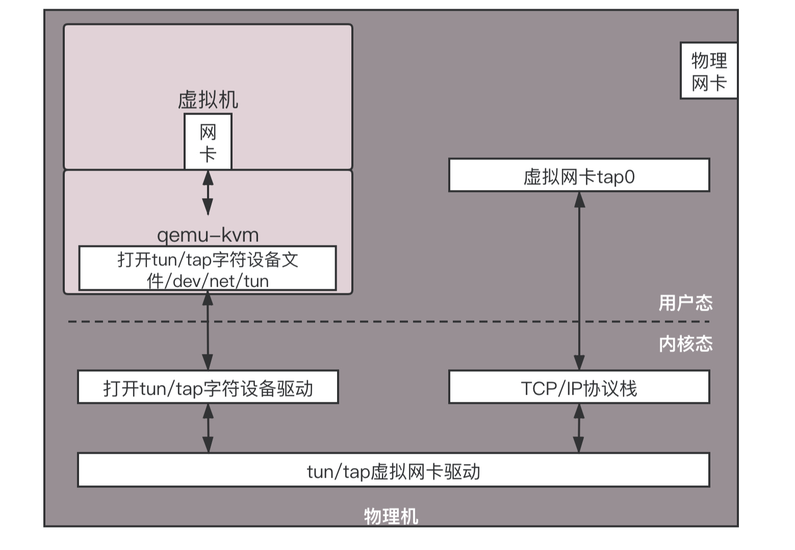
首先，虚拟机要有一张网卡。对于qemu-kvm来说，这是通过Linux上的一种TUN/TAP技术来实现的。
虚拟机是物理机上跑着的一个软件。这个软件可以像其他应用打开文件一样，打开一个称为TUN/TAP的Char Dev（字符设备文件）。打开了这个字符设备文件之后，在物理机上就能看到一张虚拟TAP网卡。
虚拟化软件作为“骗子”，会将打开的这个文件，在虚拟机里面虚拟出一张网卡，让虚拟机里面的应用觉得它们真有一张网卡。于是，所有的网络包都往这里发。
当然，网络包会到虚拟化软件这里。它会将网络包转换成为文件流，写入字符设备，就像写一个文件一样。内核中TUN/TAP字符设备驱动会收到这个写入的文件流，交给TUN/TAP的虚拟网卡驱动。这个驱动将文件流再次转成网络包，交给TCP/IP协议栈，最终从虚拟TAP网卡发出来，成为标准的网络包。
就这样，几经转手，数据终于从虚拟机里面，发到了虚拟机外面。
虚拟网卡连接到云中
我们就这样有了虚拟TAP网卡。接下来就要看，这个卡怎么接入庞大的数据中心网络中。
在接入之前，我们先来看，云计算中的网络都需要注意哪些点。
共享：尽管每个虚拟机都会有一个或者多个虚拟网卡，但是物理机上可能只有有限的网卡。那这么多虚拟网卡如何共享同一个出口？
隔离：分两个方面，一个是安全隔离，两个虚拟机可能属于两个用户，那怎么保证一个用户的数据不被另一个用户窃听？一个是流量隔离，两个虚拟机，如果有一个疯狂下片，会不会导致另外一个上不了网？
互通：分两个方面，一个是如果同一台机器上的两个虚拟机，属于同一个用户的话，这两个如何相互通信？另一个是如果不同物理机上的两个虚拟机，属于同一个用户的话，这两个如何相互通信？
灵活：虚拟机和物理不同，会经常创建、删除，从一个机器漂移到另一台机器，有的互通、有的不通等等，灵活性比物理网络要好得多，需要能够灵活配置。
共享与互通问题
这些问题，我们一个个来解决。
首先，一台物理机上有多个虚拟机，有多个虚拟网卡，这些虚拟网卡如何连在一起，进行相互访问，并且可以访问外网呢？
还记得我们在大学宿舍里做的事情吗？你可以想象你的物理机就是你们宿舍，虚拟机就是你的个人电脑，这些电脑应该怎么连接起来呢？当然应该买一个交换机。
在物理机上，应该有一个虚拟的交换机，在Linux上有一个命令叫作brctl，可以创建虚拟的网桥brctl addbr br0。创建出来以后，将两个虚拟机的虚拟网卡，都连接到虚拟网桥brctl addif br0 tap0上，这样将两个虚拟机配置相同的子网网段，两台虚拟机就能够相互通信了。
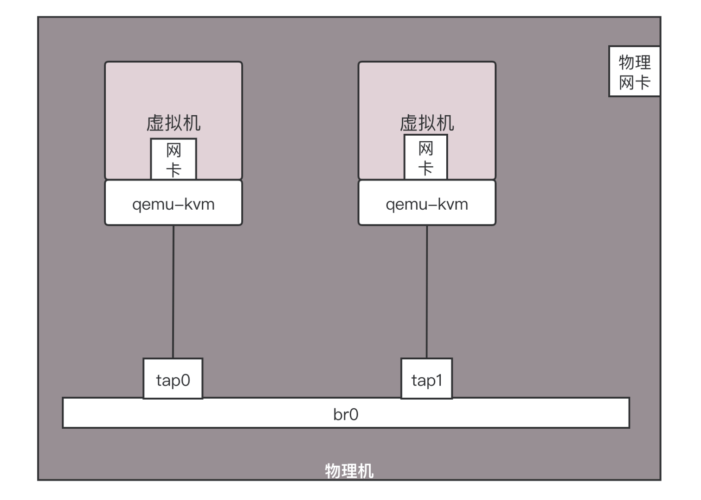
那这些虚拟机如何连接外网呢？在桌面虚拟化软件上面，我们能看到以下选项。
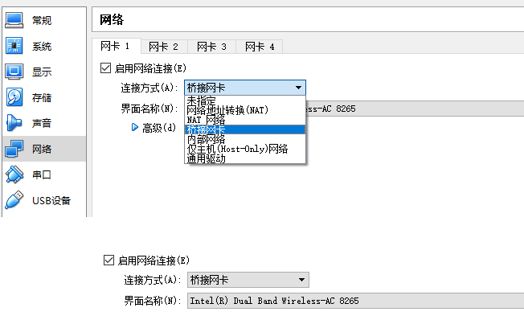
这里面，host-only的网络对应的，其实就是上面两个虚拟机连到一个br0虚拟网桥上，而且不考虑访问外部的场景，只要虚拟机之间能够相互访问就可以了。
如果要访问外部，往往有两种方式。
一种方式称为桥接。如果在桌面虚拟化软件上选择桥接网络，则在你的笔记本电脑上，就会形成下面的结构。
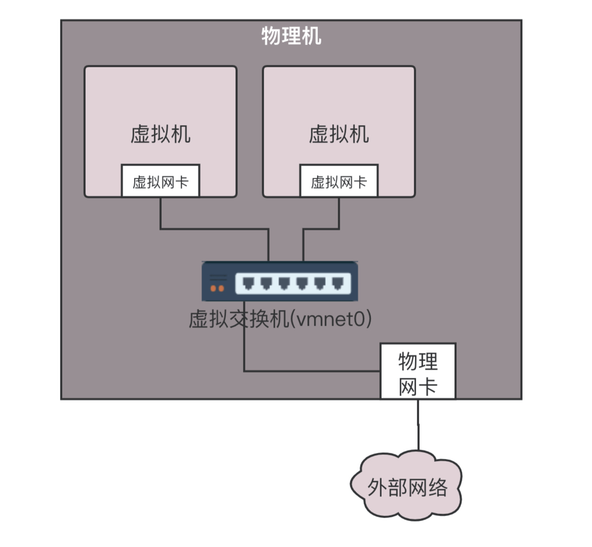
每个虚拟机都会有虚拟网卡，在你的笔记本电脑上，会发现多了几个网卡，其实是虚拟交换机。这个虚拟交换机将虚拟机连接在一起。在桥接模式下，物理网卡也连接到这个虚拟交换机上，物理网卡在桌面虚拟化软件上，在“界面名称”那里选定。
如果使用桥接网络，当你登录虚拟机里看IP地址的时候会发现，你的虚拟机的地址和你的笔记本电脑的，以及你旁边的同事的电脑的网段是一个网段。这是为什么呢？这其实相当于将物理机和虚拟机放在同一个网桥上，相当于这个网桥上有三台机器，是一个网段的，全部打平了。我将图画成下面的样子你就好理解了。
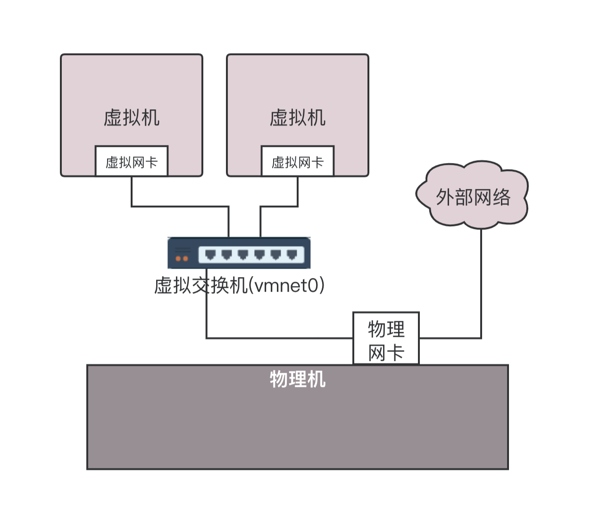
在数据中心里面，采取的也是类似的技术，只不过都是Linux，在每台机器上都创建网桥br0，虚拟机的网卡都连到br0上，物理网卡也连到br0上，所有的br0都通过物理网卡出来连接到物理交换机上。
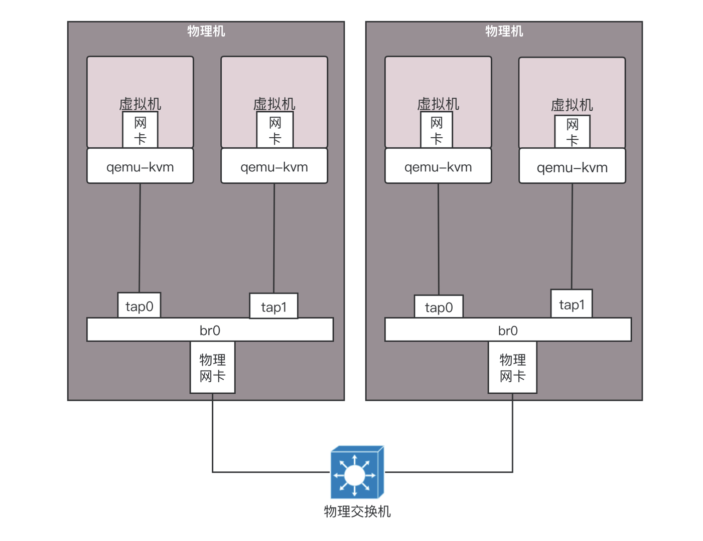
同样我们换一个角度看待这个拓扑图。同样是将网络打平，虚拟机会和你的物理网络具有相同的网段。
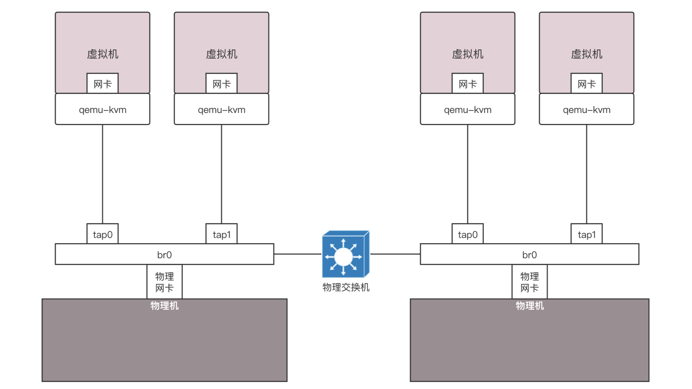
在这种方式下，不但解决了同一台机器的互通问题，也解决了跨物理机的互通问题，因为都在一个二层网络里面，彼此用相同的网段访问就可以了。但是当规模很大的时候，会存在问题。
你还记得吗？在一个二层网络里面，最大的问题是广播。一个数据中心的物理机已经很多了，广播已经非常严重，需要通过VLAN进行划分。如果使用了虚拟机，假设一台物理机里面创建10台虚拟机，全部在一个二层网络里面，那广播就会很严重，所以除非是你的桌面虚拟机或者数据中心规模非常小，才可以使用这种相对简单的方式。
另外一种方式称为NAT。如果在桌面虚拟化软件中使用NAT模式，在你的笔记本电脑上会出现如下的网络结构。
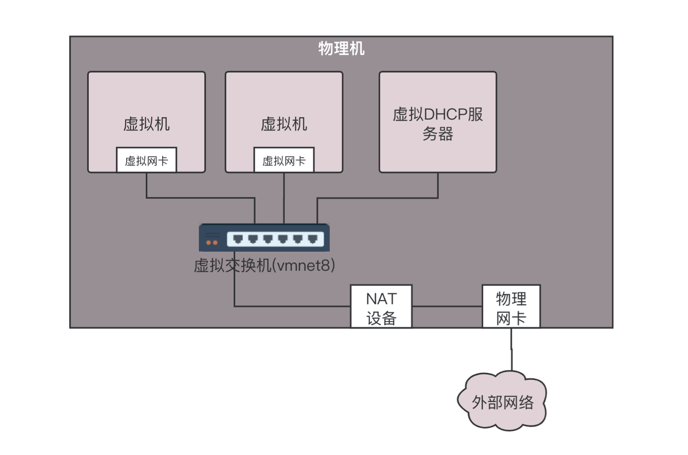
在这种方式下，你登录到虚拟机里面查看IP地址，会发现虚拟机的网络是虚拟机的，物理机的网络是物理机的，两个不相同。虚拟机要想访问物理机的时候，需要将地址NAT成为物理机的地址。
除此之外，它还会在你的笔记本电脑里内置一个DHCP服务器，为笔记本电脑上的虚拟机动态分配IP地址。因为虚拟机的网络自成体系，需要进行IP管理。为什么桥接方式不需要呢？因为桥接将网络打平了，虚拟机的IP地址应该由物理网络的DHCP服务器分配。
在数据中心里面，也是使用类似的方式。这种方式更像是真的将你宿舍里面的情况，搬到一台物理机上来。
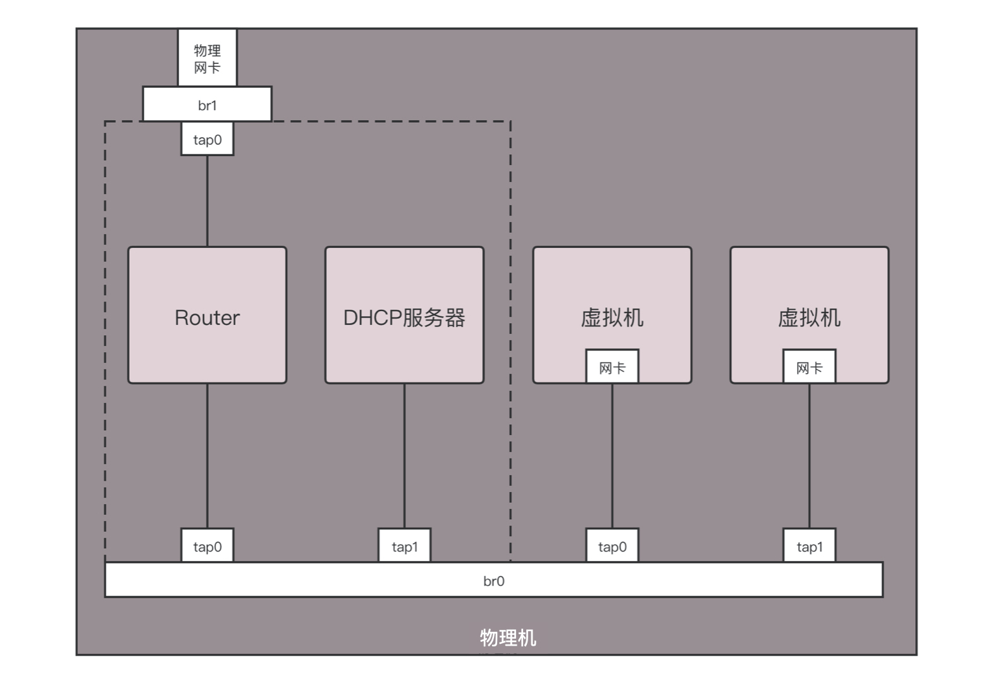
虚拟机是你的电脑，路由器和DHCP Server相当于家用路由器或者寝室长的电脑，物理网卡相当于你们宿舍的外网网口，用于访问互联网。所有电脑都通过内网网口连接到一个网桥br0上，虚拟机要想访问互联网，需要通过br0连到路由器上，然后通过路由器将请求NAT成为物理网络的地址，转发到物理网络。
如果是你自己登录到物理机上做个简单配置，你可以简化一下。例如将虚拟机所在网络的网关的地址直接配置到br0上，不用DHCP Server，手动配置每台虚拟机的IP地址，通过命令iptables -t nat -A POSTROUTING -o ethX -j MASQUERADE，直接在物理网卡ethX上进行NAT，所有从这个网卡出去的包都NAT成这个网卡的地址。通过设置net.ipv4.ip_forward = 1，开启物理机的转发功能，直接做路由器，而不用单独的路由器，这样虚拟机就能直接上网了。
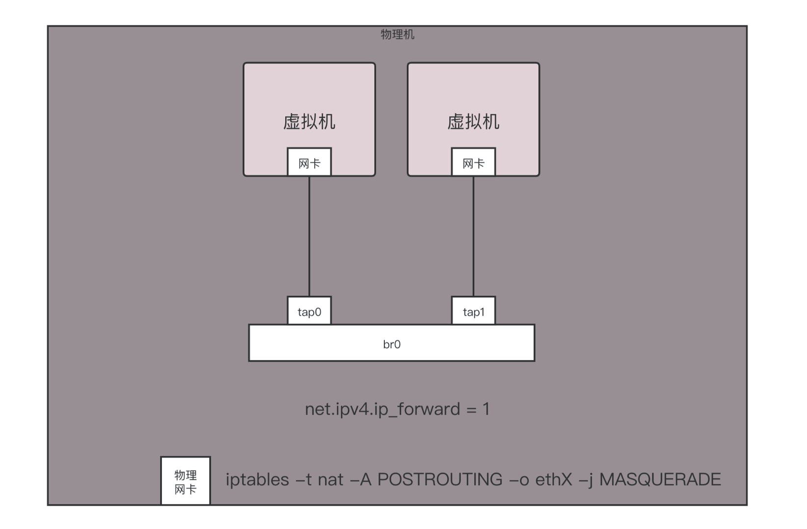
隔离问题
解决了互通的问题，接下来就是隔离的问题。
如果一台机器上的两个虚拟机不属于同一个用户，怎么办呢？好在brctl创建的网桥也是支持VLAN功能的，可以设置两个虚拟机的tag，这样在这个虚拟网桥上，两个虚拟机是不互通的。
但是如何跨物理机互通，并且实现VLAN的隔离呢？由于brctl创建的网桥上面的tag是没办法在网桥之外的范围内起作用的，因此我们需要寻找其他的方式。
有一个命令vconfig，可以基于物理网卡eth0创建带VLAN的虚拟网卡，所有从这个虚拟网卡出去的包，都带这个VLAN，如果这样，跨物理机的互通和隔离就可以通过这个网卡来实现。
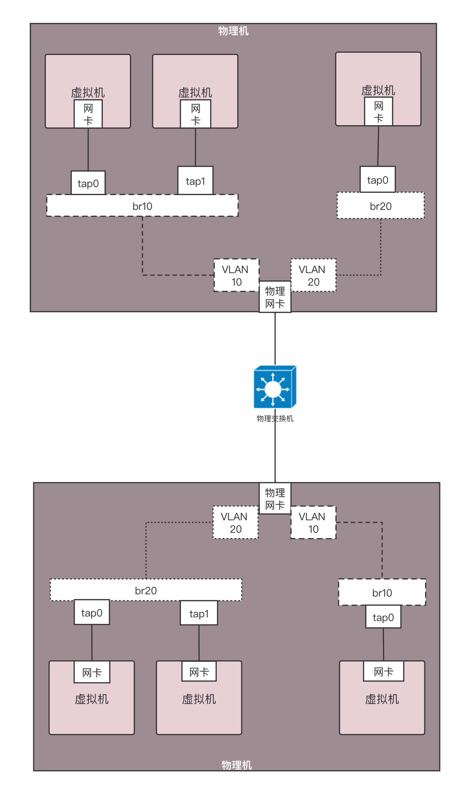
首先为每个用户分配不同的VLAN，例如有一个用户VLAN 10，一个用户VLAN 20。在一台物理机上，基于物理网卡，为每个用户用vconfig创建一个带VLAN的网卡。不同的用户使用不同的虚拟网桥，带VLAN的虚拟网卡也连接到虚拟网桥上。
这样是否能保证两个用户的隔离性呢？不同的用户由于网桥不通，不能相互通信，一旦出了网桥，由于VLAN不同，也不会将包转发到另一个网桥上。另外，出了物理机，也是带着VLAN ID的。只要物理交换机也是支持VLAN的，到达另一台物理机的时候，VLAN ID依然在，它只会将包转发给相同VLAN的网卡和网桥，所以跨物理机，不同的VLAN也不会相互通信。
使用brctl创建出来的网桥功能是简单的，基于VLAN的虚拟网卡也能实现简单的隔离。但是这都不是大规模云平台能够满足的，一个是VLAN的隔离，数目太少。前面我们学过，VLAN ID只有4096个，明显不够用。另外一点是这个配置不够灵活。谁和谁通，谁和谁不通，流量的隔离也没有实现，还有大量改进的空间。
小结
好了，这一节就到这里了，我们来总结一下：
云计算的关键技术是虚拟化，这里我们重点关注的是，虚拟网卡通过打开TUN/TAP字符设备的方式，将虚拟机内外连接起来；
云中的网络重点关注四个方面，共享、隔离、互通、灵活。其中共享和互通有两种常用的方式，分别是桥接和NAT，隔离可以通过VLAN的方式。
接下来，给你留两个思考题。
为了直观，这一节的内容我们以桌面虚拟化系统举例。在数据中心里面，有一款著名的开源软件OpenStack，这一节讲的网络连通方式对应OpenStack中的哪些模型呢？
这一节的最后，我们也提到了，本节提到的网络配置方式比较不灵活，你知道什么更加灵活的方式吗？
我们的专栏更新到第24讲，不知你掌握得如何？每节课后我留的思考题，你都有没有认真思考，并在留言区写下答案呢？我会从已发布的文章中选出一批认真留言的同学，赠送学习奖励礼券和我整理的独家网络协议知识图谱。
欢迎你留言和我讨论。趣谈网络协议，我们下期见！
© 2019 - 2023 Liangliang Lee. Powered by gin and hexo-theme-book.